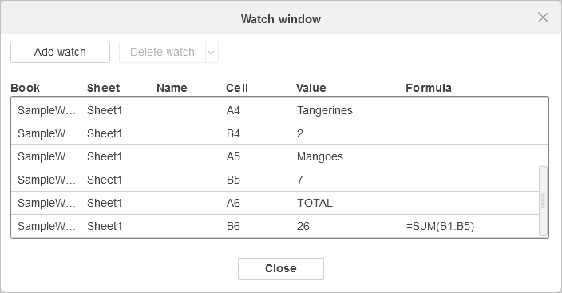

Prozor za praćenje
Prilikom rada sa velikim radnim listovima u Spreadsheet Editor-u, Prozor za praćenje može biti veoma koristan za praćenje ćelija i njihovih formula. Prozor za praćenje vam omogućava da vidite promene u ćelijama koje se trenutno ne nalaze u vidljivom delu radnog lista. Takođe možete brzo preći na željenu ćeliju dvoklikom u Prozoru za praćenje.
Prozor za praćenje omogućava praćenje sledećih parametara: Radna sveska, Radni list, Naziv, Ćelija, Vrednost i Formula.

Da biste dodali novo praćenje,
- Idite na karticu Formula.
- Kliknite na dugme Prozor za praćenje.
- Kliknite na dugme Dodaj praćenje u Prozoru za praćenje.
- Izaberite potrebni opseg podataka za praćenje.
- Kliknite na Zatvori da biste se vratili na radni list ili nastavite rad na radnom listu sa otvorenim praćenjem. Sve promene u ćelijama biće vidljive u prozoru za praćenje.
Da biste obrisali praćenje,
- Idite na karticu Formula.
- Kliknite na dugme Prozor za praćenje.
- Izaberite željeno praćenje ili više praćenja klikom uz kombinaciju tastera
Ctrl+Levi taster miša. - Kliknite na dugme Obriši praćenje i izaberite da li želite da Obrišete praćenje ili Obrišete sve.